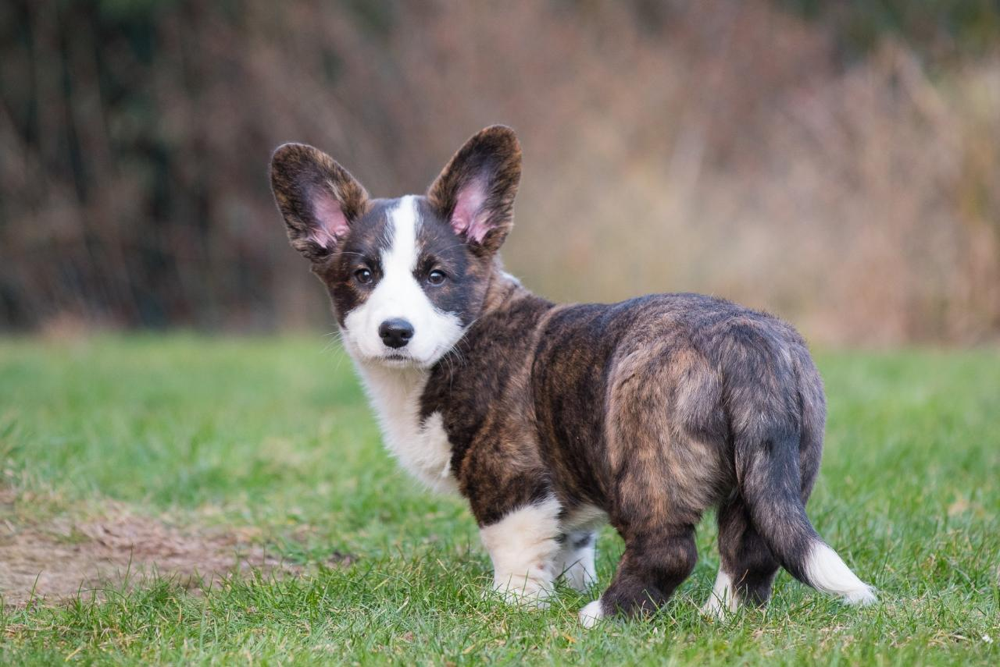

Темперамент
Кардиган — верный и преданный компаньон.

Эти собаки хорошо подстраиваются под обстоятельства и характер хозяина. Они более спокойны и рассудительны в отличие от легковозбудимых пемброков. Они нуждаются в постоянной и своевременно социализации, чтобы научиться доверять другим людям и животным. Для этого ходите с ним как можно в большее количество мест. Если Вы заметили, что он плохо социализируется или ведёт себя ну очень уж сдержанно, то обратитесь за помощью к профессиональному тренеру.
Уживётся-ли с другими?
Если воспитывать кардигана рядом с другими животными и детьми, то они уживуться вместе. Но из-за того, что это пастушья собака, она может попытаться начать контролировать других или попытаться вести себя упрямо и независимо. С этим также необходимо работать.
Особенности
Кардиганы любят привлекать к себе внимание, что иногда может привести к не очень хорошим последствиям (испорченная мебель или порванные тапки). Ругать кардиганов нужно осторожно. Когда же они делают то, что вам нужно — награждайте похвалой и лакомством.

Они нуждаются не в большом количестве физических нагрузок и упражнений, а в умственной стимуляции. Без этого они скучают, что приводит зачастую к деструктивному поведению.